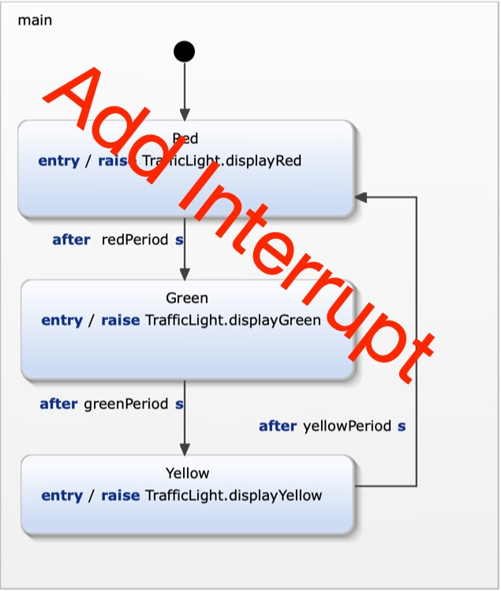

Exercise 5
Interruptable Traffic Light
The police should be able to interrupt the traffic light during its regular autonomous operation.
This additional feature should be defined using hierarchical states.
The tests for the new requirements are already defines as a testable specification. So a test driven approach is applied.

Requirements
In addition to the previous requirements you have to consider these additional requirements:
- R7a: police can interrupt autonomous operation./li>
- R7b: Autonomous opreration can be interrupted during any pahse indicated by constant red, yellow and green lights.
- R7c: In interruptetd mode the yellow light blinks with a constant frequency of 1 Hz. (on -> 0.5s, off 0.5s).
- R8a: Police can resume to regular autonomous operation.
- R8b: when regular operation is resumed the traffic light restarts with red (R) light on.
Model the interrupt feature
- Take a look at specification/InterruptSpecification.sctunit. These test cases are already complete and checks all the requirements defined above.
It will fail on the first run.
- Extend the stetchart. All required declarations are already in place.
- While you are extending the statechart run the test suite TestTrafficLight.sctunit. It contains the new interrupt specification and
all previously defined tests. Running this suit makes sure that no regressions occur.
- Continue from 2. until all tests are green. You should also have no uncovered model elements.